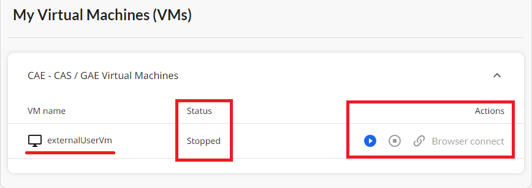
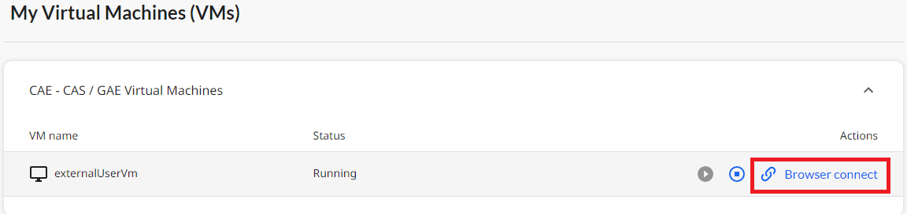
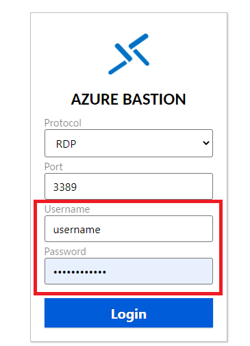

Virtual Machines
Virtual Machine
Before logging into your virutal machine, you must first login to the Data Analyitics Services portal
-
You will see at the bottom of the hub page the Virtual Machine that you can access. From the portal, you will be able to perform three different actions. You can either:
-
Start the Virtual Machine
- Stop the Virtual Machine
- Connect to the Virtual Machine
Each action will modify the Virtual Machine status. 
-
Start the virtual machine: When the virtual machine status is stopped, the start button is highlighted. You can then start the virtual machine and its status will switch to Starting. The Start button is not highlighted anymore. After that, it can take a few minute for the virtual machine to be in the Running mode. The browser connect button is then highlighted.

-
Connect to the virtual machine: Once the virtual machine is in its Running status, the browser connect button is highlighted. To connect to the virtual machine, you will need to hit the Browser connect button; 
-
This will open a new page where you will be prompted to sign in using your credential provided to you by Statistics Canada. Once launched, click the Login button.

Best Practices
- Virtual machines only incur costs while they are running.\ You should shut down your virtual machine when not in use to prevent unneccessary charges.
- All virtual machines are turned off every evening at 7 PM EST.
- Do not share your password with others.
Frequently Asked Questions (FAQ)
- I can not see any virtual machines?\ Please use the DAS portal Help button to Contact Us and submit a request for a virtual machine.
- I have forgotten my ext.statcan.ca password?\ Please use the DAS portal Help button to Contact Us and submit a request for assitance.
- I have forgotten my virtual machines username and password?\ Please use the DAS portal Help button to Contact Us and submit a request for assitance.